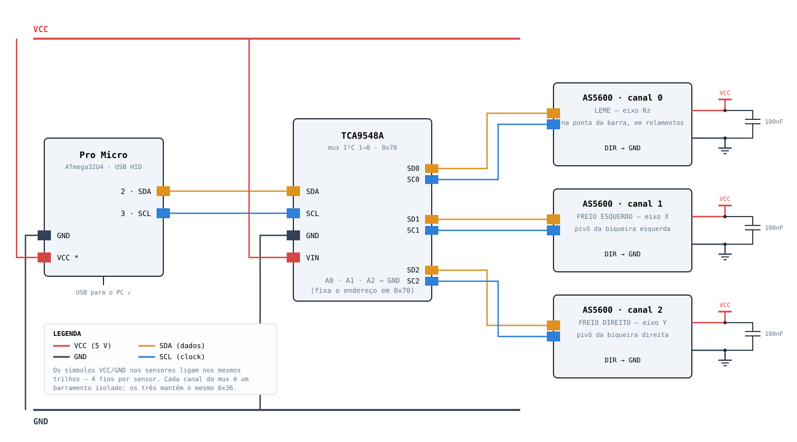
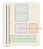

Pro Micro (ATmega32U4) · TCA9548A em 0x70 · 3× AS5600 em 0x36, um por canal

AMS1117-3.3 pelo VCC e use a saída dele como trilho 3V3.
Nada no barramento pode ver 5 V: o AS5600 é 3,3 V.sem resposta no eixo, baixe I2C_CLOCK para 100000 no firmware.Placa 7×9 cm · grade 26×31 furos a 2,54 mm · vista pelo lado dos componentes. Para imprimir 1:1: Ctrl+P, escala 100%, sem “ajustar à página”, e confira a régua abaixo.

O layout é gerado por gerar_perfurada.py — mexa nos blocos lá e rode o script,
não edite o SVG na mão. A grade assume 26×31 furos; com outra contagem os blocos deslizam
à vontade e a netlist do diagrama acima não muda.